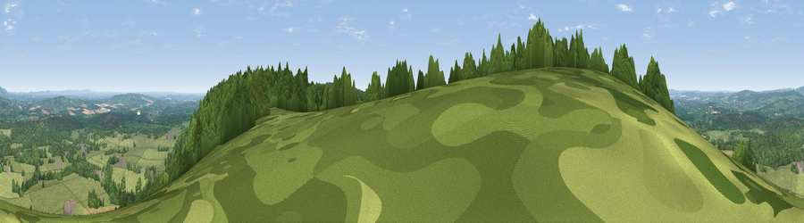

Viewpoint near Graffham
#5719 in England · top 12% of its area beats it · near Graffham · path 150 mWhere it is
The exact computed spot (SU 92025 16412). Click the marker for map links.
Public access: the nearest public right of way is about 150 m away — the final stretch may cross private land. Computed from Natural England's CRoW access layer and OpenStreetMap rights of way — not the legal definitive map. Always verify locally.
The view, rendered

A 360° render of this exact spot computed from the terrain model, tree cover and land cover — summer colours, afternoon light, calibrated against photographs of famous viewpoints. Real trees, hedges and buildings will differ in detail.
The panorama
Grey silhouette: terrain skyline in each direction (720 bearings, Earth curvature and refraction included). Dashed green: skyline with trees (+15 m) and buildings (+8 m) as obstacles. Blue strip: how far the ground is visible on each bearing.
Where the view opens
Wedge length = distance to the farthest visible ground on that bearing (vegetation-aware). Rings at 10, 25 and 50 km.
What fills the view
40% grassland · 38% woodland · 21% cropland ·
Angular shares of the visible panorama (visual magnitude), not map area. Landscape diversity 0.48 (0–1 Shannon).
Key numbers
More beautiful places nearby
The staircase of upgrades: each row has a higher view potential than everything closer. Driving times are estimates from straight-line distance, calibrated against real road routing — check an actual route before setting out.
| Place | Direction | Drive | Score |
|---|---|---|---|
| Littleton Down | SE · 3 km | ~7 min | 76.6 |
| Viewpoint near Cocking | W · 3 km | ~7 min | 77.6 |
| Viewpoint near Cocking | W · 3 km | ~8 min | 78.3 |
| Viewpoint near Bignor | SE · 5 km | ~11 min | 82.1 |
| Glatting Beacon | SE · 6 km | ~12 min | 84.3 |
| Bignor Hill | ESE · 7 km | ~14 min | 84.4 |
| Linch Down | W · 7 km | ~15 min | 85.2 |
| Beacon Hill | W · 11 km | ~22 min | 85.8 |
50.93982, -0.69162 · source: screening · position refined by local search. Computed location — check access rights before visiting.